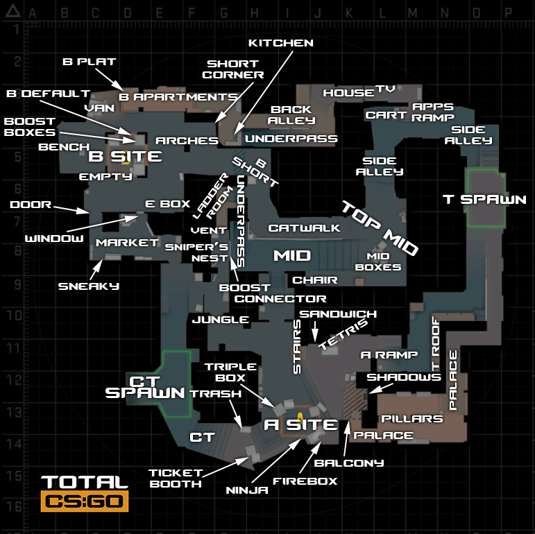

Mirage

Tácticas
default
A smokes
B split
Default
Mastin B apps
AcAs A
Cuby mid
Kalen mid
Se trata de ganar control de mapa e info.
El de A tiene que aguantar rampa y mirar que no pasen de palacio. Tiene que escuchar bien
para mirar de saber cuantos hay en A y en que posis estan.
El de B tiene que aguantar apps y limpiar ratas. Importante también mirar de escuchar cuantos hay en
B y sus posis.
Los de mid tienen que ganar Top mid, no hace falta que apreten ni short ni window ni connector.
tienen que sacar info de si hay gente window/short/conn.
Esta es la táctica que requiere más improvisación ya que en función de la info que saquemos
en los 3 puntos del mapa + si hay algun frag se decide como se actúa.
En función de la info podemos:
Ejecutar A:
Tenemos la info de que hay más facilidad de entrar en A (porque solo hay 1 o porque se sabemos sus posiciones).
El de B puede venir por ratas o por atrás pero a poder ser sin que le escuchen.
Los de mid pueden hacer todo el ruido que quieran y pueden entrar por conn/window/A
El de A mete humo CT y empieza a limpiar poco a poco timeado con los de mid
Los de A y B deberían aprovechar el factor sorpresa y llevarse un frag con el baiteo de mid
Ejecutar B:
Tenemos la info de que hay más facilidad de entrar en B (porque solo hay 1 o porque se sabemos sus posiciones).
El de A puede venir por base hacia apps o por A lurkeando
Los de mid pueden ir por corta o por apps. Si van corta intentan bloquear window y conn, flashean corta y entran sin asomar a punto. Se limpia jungla rápido, flash a punto y entran juntos a punto evitando angulos a connector
Si corta no es factible pueden ir a apps des de base o en silencio por ratas si ya habían ganado mid. En apps esperáis al de A que coja medio y corta y timeamos a la vez.
El de apps no hace ruido hasta que los de corta han baiteado toda la atención y pickea para buscar frags cuando se intenten cubrir de corta. Si no salen los frags tiene que ayudar al equipo rápido, a poder ser sin perder la posi de apps. Solo debería perder la posi de apps si el de A rota por detras y coge esa posi.
Si los de mid vienen por apps tb, entonces el bait es de los 3 de apps y el de A intenta lurkear
A smokes
Mastin humo stairs
AcAs humo CT
Cuby mid
Kalen humo jungle
Execute:
No se oye ni 1 paso en A
Al quinto hay que mandarlo a palacio
Se intenta coordinar el smoking cuando no haya humo en rampa
Se entra pickeando con calma, limpiando todos los angulos
Al morir, se da el call de la posi exacta (sandwitch, leras, firebox, ninja, underpalace, danger/default, triple, ct, jungle), nada de "AHÍ" xD
Nunca se cruza de leras para jungla
Se entra por punto con humo en ct, se limpia bien punto y se planta
Firebox se limpia des de tetris
Triple se limpia des de rampa/tetris con molly
Una vez limpio firebox y triple, se limpia a mano sandwitch, under y ninja
Y ahora se planta en default, con mínimo uno (a poder ser dos) mirando que no pusheen el humo CT
Postplant:
No stakearse dos tios en el mismo sitio
Dar el call al momento de donde vemos que hay un enemigo
Resmokear jungla avisándolo para no malgastar humo
Resmokear CT
No repickear al mismo enemigo, si no se ve claro. Se da el call y se espera que un compañero lo haga
Avisar de las flashes
Piñas/molly en leras/jungla/ct cuando se tiene el call/palpito de que hay alguien
Intentamos que alguien tenga siempre palacio. Posicion muy ventajosa. Controla tb que no vengan por detras
Siempre uno cogiendo rampa, controlando la espalda
No ir a jungla/conn a menos que sea puntual para sorprender. De normal es arriesgado.
B split
Mastin humo stairs
AcAs humo CT
Cuby mid
Kalen humo jungle